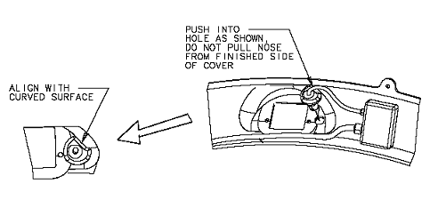

NOTE:
If excess epoxy prevents the nose of the microphone from completely snapping through the cover, remove any excess epoxy around the hole using necessary means.
Illustration 9:
Installing Front Microphone Nose
